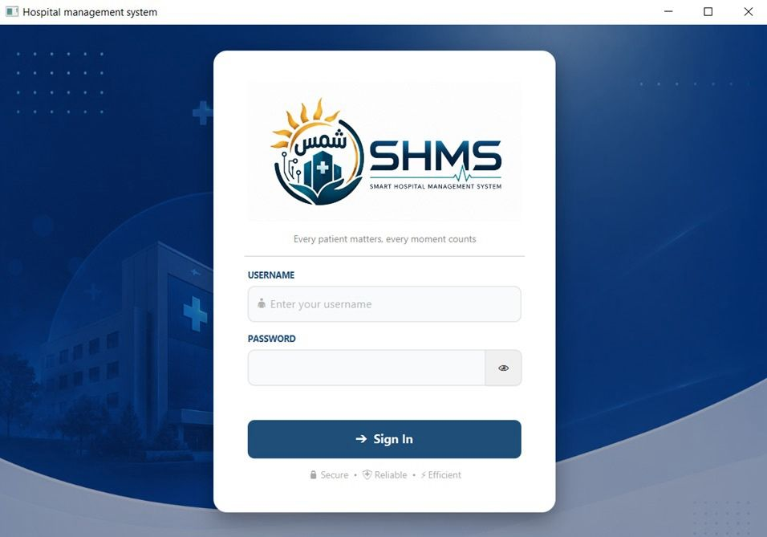
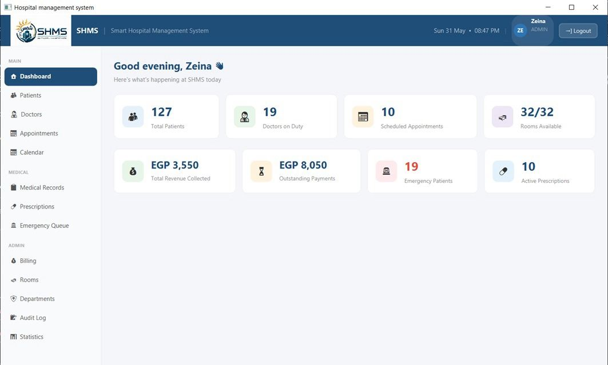
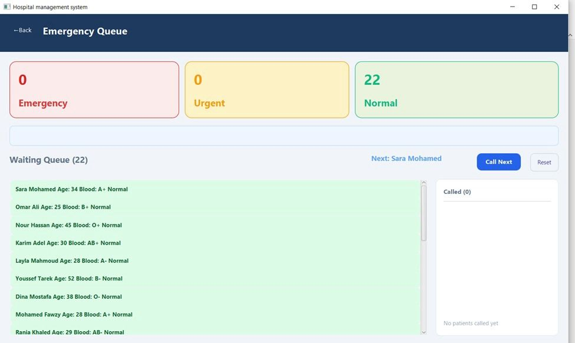
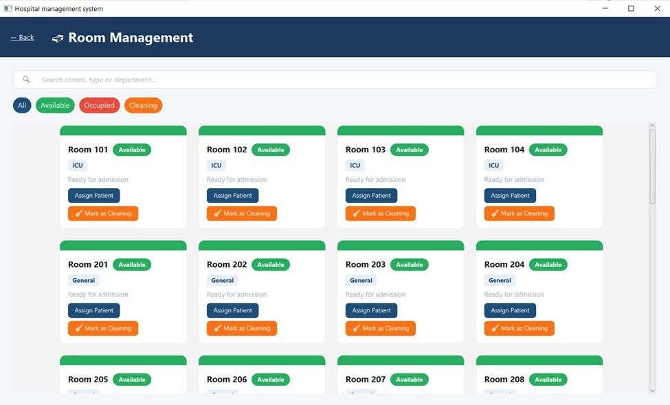
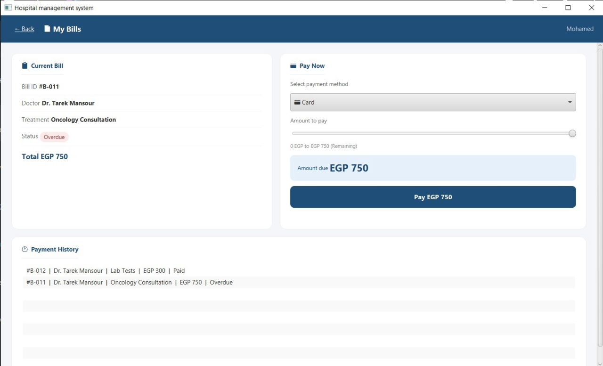

Smart Hospital Management System
JavaFX Desktop Application • Software Engineering Project
Designed and developed a full-featured hospital management system using Java, JavaFX, and SQLite. Implemented secure authentication, role-based dashboards, appointment scheduling, emergency queue management, billing, and patient records while applying object-oriented design principles and MVC architecture.
← Back to PortfolioJava
Primary Language
JavaFX
User Interface
SQLite
Database
5
User Roles
10 Days
Team Build
Project Highlights
Role-Based System
Implemented five user roles with separate dashboards, permissions, and authentication.
Database Integration
Designed and connected an SQLite database using JDBC to manage hospital operations.
Emergency Queue
Built a priority-based queue using Java's PriorityQueue to manage emergency cases efficiently.
Project Overview
The Smart Hospital Management System (SHMS) is a desktop application built by a team over 10 days as an Object-Oriented Programming course project at AASTMT. It handles day-to-day hospital operations — patient registration, appointment scheduling, billing, prescriptions, room assignments, discharge summaries, and audit logging — across five distinct user roles: Admin, Doctor, Nurse, Receptionist, and Patient, each with its own dashboard and permissions.
Technologies Used
Main Features
Patient Management
- Add patients
- Update records
- Search patients
- Medical history
Appointment Management
- Schedule appointments
- View appointments
- Assign doctors
Emergency Queue
- Priority-based queueing (Emergency, Urgent, Normal)
- Critical patient handling
- Automatic ordering
Prescriptions
- Create prescriptions
- Patient records
- Doctor management
User Authentication & Security
- Role-based login across 5 roles (Admin, Doctor, Nurse, Receptionist, Patient)
- SHA-256 password hashing
- Account lockout after multiple failed login attempts
- Session timeout with automatic logout after inactivity
- Audit logging of login activity and system access
Notifications & Records
- Automated email notifications for appointment bookings and patient discharge
- Double-booking detection using custom exceptions
- Auto-generated discharge summaries
Dashboard & Live Data
- Live dashboard statistics via background thread updates
- Doctor rating and sorting using Comparator
- Dynamic greetings and real-time clock
Software Engineering Concepts
- Object-Oriented Programming
- Inheritance
- Polymorphism
- Composition
- Encapsulation
- Abstraction
- Interfaces
- Generics
- Custom Exceptions
- Multithreading
- Comparable & Comparator
- Design Patterns (Singleton, Observer)
- MVC Design
- Database Integration
- GUI Development
Project Gallery





Challenges & Lessons Learned
- Designed a normalized SQLite database to support multiple hospital workflows.
- Built a multi-screen JavaFX desktop application using MVC architecture.
- Applied object-oriented programming concepts including inheritance, polymorphism, abstraction, and composition.
- Implemented a PriorityQueue to ensure emergency patients were treated before routine cases.
- Integrated JavaFX with SQLite using JDBC for persistent data storage.
- Worked collaboratively in a team to design, develop, and test the application within a 10-day project timeline.
Key Achievements
- Developed a complete desktop hospital management application using Java, JavaFX, and SQLite.
- Implemented secure authentication with SHA-256 password hashing and role-based access control.
- Designed an emergency patient triage system using a PriorityQueue.
- Applied software engineering principles including MVC architecture and object-oriented design.
- Built database-driven features for appointments, billing, prescriptions, patient records, and room management.
Future Improvements
- Develop a REST API for web and mobile integration.
- Migrate from SQLite to PostgreSQL or MySQL for scalability.
- Generate PDF medical reports and invoices.
- Add real-time notifications using WebSockets or push services.
- Deploy the system using Docker and cloud infrastructure.